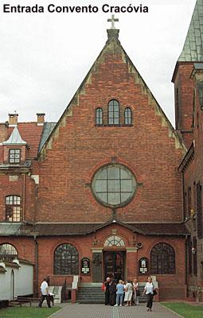
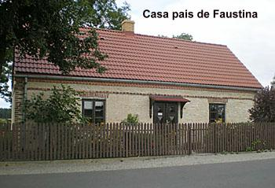
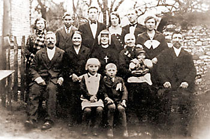
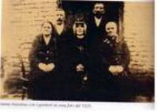

SEGREDOS DA ALMA
Uma vez, tive um grande desejo
de receber a Sagrada Comunhão, mas como estava com uma dúvida, 
À noite, quando entrei na pequena Capela, ouvi na alma estas palavras: “Minha filha, medita sobre estas palavras: E, estando em agonia, rezava com mais intensidade”. Quando comecei a refletir mais profundamente, muita luz se derramou em minha alma. Conheci de quanta perseverança necessitamos na oração, e às vezes, de uma oração tão penosa depende a nossa salvação. (Diário parágrafo 157 – página 76)
MUDANÇA TEMPORÁRIA DE CONFESSOR
Quando o Padre Sopocko viajou para a Terra Santa, a Comunidade passou a se confessar com o Padre Dabrowski S. J. Numa confissão ele me perguntou se eu estava consciente da vida mais superior que existia na minha alma com um grau bem elevado. Respondi que estava consciente disso e sabia o que estava acontecendo no meu íntimo. Disse-me então: “A Irmã não pode destruir isso na sua alma, nem mudar por sua conta. Não é em todas as almas que se manifesta essa grande felicidade de uma vida mais elevada, e, na Irmã, ela é visível, por que existe em grau muito superior. Que a Irmã tome cuidado para não desperdiçar essas grandes graças Divinas”. (Diário parágrafo 271 – página 105)
Contudo, este mesmo Padre, anteriormente, me tinha exposto a muitas provas. Quando numa ocasião lhe contei o que DEUS estava exigindo de mim: “a pintura da Imagem de JESUS Misericordioso, a instituição da Festa da Misericórdia no primeiro domingo depois da Páscoa e a Fundação de uma Nova Congregação”, ele riu e me mandou confessar às 8 horas da noite (20 horas), quando não tinha mais ninguém e a Igreja estava sendo fechada. Voltei para casa sem me confessar. Fiz por ele uma hora de adoração e certas mortificações, pedindo em seu benefício à Luz Divina do discernimento. E agora, quando o Padre Sopocko viajou, ele veio substituí-lo! Fui obrigada a me confessar com ele. E aquilo que antes ele não queria reconhecer, agora está me obrigando a uma grande fidelidade a essas inspirações interiores! DEUS, às vezes, permite tais coisas. Que em tudo ELE seja louvado. (Diário parágrafo 272 – página 105)
ADORAÇÃO NOTURNA

O MALIGNO SE MANIFESTA
JESUS me deu a conhecer como LHE é agradável a oração reparadora, dizendo: “A oração da alma humilde e amante desarma a ira de Meu PAI e alcança um mar de bênçãos”. Terminada a adoração, na metade do caminho para a cela, fui cercada por um bando de cães negros e grandes, que pulavam e uivavam, querendo despedaçar-me. Percebi que não se tratava de cães, mas de demônios. Um deles disse com raiva: “Por nos teres arrebatado tantas almas, esta noite, te faremos em pedaços”. Respondi: “Se essa for a Vontade de DEUS misericordiosíssimo, podem despedaçar-me, pois eu o mereci com justiça, por que sou a mais miserável dos pecadores, e DEUS, é sempre Santo, Justo e Infinitamente Misericordioso”. A essas palavras os demônios responderam todos juntos: “Fujamos, porque ela não está sozinha, mas está com o Onipotente”! E desapareceram do meu caminho como pó, fazendo um ruído de estrada. E tranquilamente eu caminhei para minha cela refletindo sobre a infinita e incomensurável misericórdia de DEUS. (Diário parágrafo 320 – página 115)
Em 12 de Agosto a Irmã Faustina se encontrava muito debilitada pela doença, e o Padre Michal Sopocko lhe administrou o Santo Viático (Sacramento dos Enfermos).
Depois de receber os últimos Santos Sacramentos fiquei completamente boa. Fiquei sozinha por cerca de meia hora, e novamente repetiu-se o ataque da tuberculose, mas já não tão forte, mercê dos cuidados médicos.
Unia os meus sofrimentos aos sofrimentos de JESUS, e os oferecia por mim e pela conversão das almas que não confiam na Bondade de DEUS. De repente, a minha cela encheu-se de vultos negros, cheios de raiva e ódio de mim. Um deles disse: “Maldita és tu e AQUELE que está em ti, por que já estás começando a nos atormentar mesmo no inferno”! Pronunciei as palavras: “E o VERBO se fez Carne e habitou entre nós”. E, imediatamente, essas figuras desapareceram fazendo um grande zumbido. (Diário parágrafo 323 – página 116)
Dia 15 de Agosto de 1934, data comemorativa da Assunção de NOSSA SENHORA ao Céu não estive na Santa Missa, a médica Dra. Helena Maciejewska não permitiu, apenas rezei fervorosamente na cela. NOSSA SENHORA apareceu para mim com uma beleza indizível e me disse: “Minha filha, exijo de ti oração, oração e mais oração pelo mundo e especialmente pela tua Pátria. Por nove dias receba a Comunhão reparadora, une-te estreitamente ao Sacrifício da Santa Missa. Durante esses nove dias te apresentarás diante de DEUS como vítima de oblação, sempre, em todo lugar e tempo, de dia ou de noite, toda vez que te acordares reza em espírito. Em espírito sempre se pode perseverar na oração”. (Diário parágrafo 325 – página 116)
Em Setembro de 1934, meu Confessor Padre Sopocko me pediu que rezasse em sua intenção. Comecei uma novena a NOSSA SENHORA. Consistia em rezar nove vezes a “Salve Rainha”. No final do nono dia, vi a MÃE DE DEUS com o MENINO JESUS nos braços e vi também o meu Confessor, ajoelhado aos Seus pés e conversando com Ela. Não compreendi o que ele dizia a VIRGEM MARIA, pois eu estava ocupada em conversar com o MENINO JESUS, que desceu dos braços de NOSSA SENHORA e se aproximou de mim. Não me cansava de admirar a Sua beleza. Ouvi depois algumas palavras que nossa MÃE SANTÍSSIMA dizia ao Padre, mas não ouvi tudo: “Não sou apenas a Rainha do Céu, mas também a Mãe de Misericórdia e tua Mãe” . E, nesse momento estendeu a mão direita, que segurava o manto, e cobriu o sacerdote. No mesmo instante a visão desapareceu. (Diário parágrafo 330 – página 117)
VISITANDO A FAMÍLIA
Em 15 de
Fevereiro de 1935, quando soube que minha mãe estava gravemente enferma, e já
próxima 
Passei aqueles
dias com meus pais, parentes e amigos, com grande alegria e profunda amizade.
Mas, além de todas as coisas boas, fiquei preocupada por não poder me encontrar
com duas das minhas irmãs. Senti interiormente que as almas delas se encontravam
em grande perigo. Só de pensar, a dor transpassou o meu coração. Quando surgiu
uma oportunidade, fervorosamente pedi ao SENHOR uma graça para elas. JESUS me
respondeu: “Concedo-lhes não
apenas as graças necessárias, mas também graças especiais”. Quando chegou o momento da partida, meu pai, minha mãe e minha 
JESUS EXIGE DIVULGAÇÃO DE SUA MISERICÓRDIA
No dia 5 de Maio de 1935, ao invés de fazer a minha oração interior como habitualmente, comecei a ler um livro espiritual. Então, eu ouvi na alma estas palavras claras e fortemente: “Prepararás o mundo para a Minha última Vinda”. Fiquei profundamente emocionada e compreendi aquelas palavras do SENHOR na sua totalidade. (Diário parágrafo 429 – página 145)
No dia 29 de Junho, quando conversava com o meu Diretor Espiritual sobre os diversos assuntos que o SENHOR exigia de mim, ele guiado pelo ESPÍRITO SANTO, penetrou no mais íntimo da minha alma e nos segredos mais ocultos que havia entre mim e DEUS, sobre os quais nunca lhe havia falado. Esse segredo é que DEUS está exigindo que haja uma Congregação que proclame em todas as partes a misericórdia de DEUS e que interceda junto ao SENHOR para conseguir a misericórdia Divina para o mundo. O Padre me perguntou se eu não tinha inspirações a esse respeito, respondi que ordens claras eu não tinha. Em vão me defendia, dizendo que não teria meios de cumprir a ordem do SENHOR, porque no fim da conversa vi NOSSO SENHOR do mesmo modo como está pintado na imagem, e ELE me disse: “Desejo que haja tal Congregação”. O SENHOR não levava em conta a minha fraqueza, mas dava-me a conhecer quantas dificuldades teria de superar. E eu, sua pobre criatura, nada mais sabia dizer que: “Sou incapaz, ó meu DEUS”. (Diário parágrafos 436/437 – página 147)
No começo da Santa Missa, no dia 30 de Junho de 1935, vi o SENHOR JESUS numa beleza indizível. ELE me disse que exigia que “essa Congregação fosse fundada o quanto antes. Tu viverás nela, com as tuas companheiras. O Meu ESPÍRITO será a Regra da vossa vida. Vossa vida deve ser modelada pela Minha, desde a manjedoura até a morte na Cruz. Penetra nos Meus Mistérios e conhecerás o abismo da Minha Misericórdia para com as criaturas e a Minha insondável Bondade, e a darás a conhecer ao mundo. Através da oração, serás medianeira entre a Terra e o Céu”. Nesse instante, chegou o momento de receber a Sagrada Comunhão, JESUS desapareceu e vi uma grande claridade. Então ouvi estas palavras: “Concedemos-te NOSSA bênção”, e imediatamente, daquela claridade saiu um raio fulgurante que atravessou o meu coração. Um fogo estranho e maravilhosos acendeu na minha alma, pensei que morreria de alegria e felicidade, pois sentia uma total absorção em DEUS. A Santa Missa terminou não sei quando, e quando voltei a mim, sentia uma poderosa força e coragem para cumprir a Vontade de DEUS. (Diário parágrafo 438 e 439 – página 148)
O ANJO EXECUTOR DA IRA DE DEUS
Sexta-feira, 13 de Setembro de 1935. À noite, quando me encontrava na minha cela, vi o Anjo executor da ira de DEUS. Ele estava vestido de branco, o rosto radiante e uma nuvem aos seus pés. Da nuvem saíam trovões e relâmpagos para as suas mãos e delas para atingir a Terra. Quando vi esse sinal da ira de DEUS, especialmente direcionado para um determinado lugar que não posso mencionar por motivos bem compreensíveis, comecei a pedir ao Anjo que se detivesse por alguns momentos, pois o mundo faria penitência. Mas o meu pedido de nada valeu perante a ira de DEUS. E foi neste instante que vi a SANTÍSSIMA TRINDADE. A grandeza da Sua Majestade transpassou-me profundamente e eu não ousava repetir a minha súplica. Porém, nesse mesmo momento senti em mim a força da graça de JESUS que reside na minha alma, e, quando me veio à consciência dessa graça, imediatamente fui arrebatada até o Trono de DEUS. Ó como é grande o NOSSO SENHOR e DEUS, e como é inconcebível a Sua Santidade! Não vou tentar descrever essa grandeza, por que em breve todos O veremos como ELE é. Então, comecei a suplicar a DEUS em benefício do mundo com palavras ouvidas interiormente. Quando assim rezava, vi a impossibilidade do Anjo executar aquele justo castigo, merecido por causa dos muitos pecados da humanidade. Nunca tinha rezado com tanta força interior como naquela ocasião. As palavras com que eu suplicava a DEUS eram as seguintes: “Eterno PAI, eu Vos ofereço o Corpo e o Sangue, a Alma e a Divindade de Vosso diletíssimo Filho, NOSSO SENHOR JESUS CRISTO, em reparação dos nossos pecados e daqueles cometidos pelo mundo inteiro. Pela Sua dolorosa Paixão, tende misericórdia de nós”. (Diário parágrafo 474/475 – páginas 156 e 157)
TERÇO DA MISERICÓRDIA
No dia seguinte pela manhã, quando entrei na Capela, ouvi interiormente estas palavras: “Toda vez que entrares na Capela, reza logo essa oração que te ensinei ontem”. Quando rezei essa oração, ouvi na alma estas palavras: “Essa oração serve para aplacar a Minha ira. Tu a recitarás por nove dias, por meio do Terço do Rosário, da seguinte maneira: Primeiro dirás o PAI NOSSO, a AVE MARIA e o CREDO nas três contas, após a Cruz na extremidade do Terço. Depois, nas contas do PAI NOSSO, dirás as seguintes palavras: Eterno PAI, eu Vos ofereço o Corpo e o Sangue, a Alma e a Divindade de Vosso diletíssimo Filho, NOSSO SENHOR JESUS CRISTO, em reparação dos nossos pecados e dos (pecados) cometidos pelo mundo inteiro. Nas contas das AVES MARIA rezará as seguintes palavras: Pela Sua dolorosa Paixão, tende misericórdia de nós e do mundo inteiro. No fim, (substituindo a oração SALVE RAINHA) rezarás três vezes estas palavras: DEUS Santo, DEUS Forte, DEUS Imortal, tende misericórdia de nós e do mundo inteiro”.(Diário parágrafo 476 – pagina 157)
Promessa do SENHOR
“As almas que rezarem este Terço da Misericórdia, serão envolvidas pela Minha Misericórdia durante a sua vida e, de modo particular, na hora da morte”.